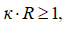

электронный
ресурс по учебной дисциплине 1-58 01 01 - "ИНЖЕНЕРНО-ПСИХОЛОГИЧЕСКОЕ ОБЕСПЕЧЕНИЕ ИНФОРМАЦИОННЫХ ТЕХНОЛОГИЙ"
|
||
| Оглавление | Программа | Теория | Практика| Контроль знаний | Об авторах | ||
Лекция 6
Квантовоэлектронные приборы и устройства
1. Физические основы квантовой электроники.
Физические основы квантовой электроники: спонтанное и вынужденное излучение. Квантовая электроника является областью электроники, в которой исследуются явления генерации и усиления электромагнитных колебаний на основе эффекта вынужденного излучения, явления нелинейного взаимодействия мощного излучения с веществом, а также возможность создания квантовых электронных приборов и устройств — молекулярных генераторов (мазеров), квантовых генераторов (лазеров), усилителей, устройств нелинейного преобразования частот лазерного излучения.
В квантовой электронике используются физические явления, в которых основное участие принимают связанные электроны. Эти электроны входят в состав систем из атомов, молекул, отдельных кристаллов, континуальных сред всех агрегатных состояний вещества.
В соответствии с законами квантовой механики, энергия электрона, связанного в атоме, имеет ряд дискретных значений Е0, Е1,Е2, Е3, ... Еп,... Эти дискретные значения называются уровнями энергии. Весь набор разрешенных квантовой механикой уровней образует энергетический спектр атома. Основным уровнем Е0 назовем наименьший уровень. Все остальные уровни называются возбужденными.
Переход связанных электронов с одного уровня на другой сопряжен с излучением или поглощением электромагнитной энергии, частота которой определяется соотношением:
где h — постоянная Планка, vij — частота излучения (поглощения) при квантовом переходе с уровня Ец на уровень Еj.
Излучение и поглощение происходит отдельными порциями, квантами — фотонами: при поглощении фотона энергия атома увеличивается, при испускании фотона — уменьшается. При поглощении электрон переходит вверх на более высокий уровень, а при испускании фотона электрон совершает обратный переход вниз с уменьшением энергии атома. Такие скачкообразные переходы называют квантовыми переходами.
Различаются спонтанные (самопроизвольные) и вынужденные переходы.
При спонтанном квантовом переходе испускание фотона происходит вне зависимости от внешних факторов и воздействий на квантовую систему. При этом направление излучения и поляризация фотонов могут быть любыми.
Вынужденный квантовый переход происходит под воздействием внешнего излучения частоты о, удовлетворяющего соотношению (6.1). При этом в процессе вынужденного излучения фотон имеет направление излучения и поляризацию, соответствующую этим же параметрам фотона стимулирующего излучения. Частота испущенного фотона в точности совпадаете частотой вынужденного излучения (рисунок 1.1).
Атом находится в возбужденном состоянии некоторое время т и скачкообразно переходит в невозбужденное состояние. Если предположить, что время жизни на возбужденном уровне составляет xi то при большом числе возбужденных частиц Ni, это время убывает по закону
где N0 — общее число частиц, t — текущее время, xi — время, за которое число возбужденных частиц Ni, убывает в е раз.
Частицы, потерявшие энергию и испустив фотон, могут вновь возбуждаться и переходить на уровень Ей Чем меньше xi, тем чаще будут испускаться фотоны.
Величина А = 1/tiназывается вероятностью спонтанного испускания с уровня Ei и эпределяет среднее число фотонов, испускаемых одной частицей за 1 с.
При спонтанном переходе с уровня Е2 на Е] величина А21 называется вероятностью перехода. Полная вероятность А1 спонтанного испускания с уровня Е1 на любой другой уровень равна сумме вероятностей отдельных спонтанных переходов:
где Аi,к— коэффициент Эйнштейна для спонтанного испускания. Типичное время жизни возбужденных атомов составляет ~10-8с.
а — спонтанный переход между уровнями Е1 и E2 с ге нерацией фотона: б — вынужденный переход вниз с увеличением числа фотонов; в — вынужденный переход вверх с поглощением фотона
Рисунок 6.1 – Квантовые переходы
Вынужденные квантовые переходы генерируют фотоны, которые являются копией фотонов, стимулирующих усиление электромагнитного излучения. Число вынужденных квантовых переходов пропорционально плотности излучения pv на частоте n = (Ei – Ej)/h
Число фотонов Nk,i поглощенных 1 см3 за 1 с, пропорционально населенности пк нижнего уровня Ек и плотности излучения pv:
где Bk,i — коэффициент Эйнштейна для поглощения в квантовой системе. Этот коэффициент характеризует вероятность поглощения и равен числу фотонов, поглощаемых одной частицей за 1 с, при приведенной плотности излучения pv. Вынужденное излучение «характеризуется числом фотонов Nik, испущенных в 1 см3 за 1 с:
где Вik — коэффициент Эйнштейна для вынужденного испускания, который характеризует вероятность вынужденного испускания. Этот коэффициент определяется числом фотонов, испускаемых в среднем одной частицей под действием излучения плотности pv = 1 за 1 с.
Эйнштейн рассмотрел равновесную систему, в которой число фотонов, испускаемых в
переходе Еi ® Ек с частотой n = |Ei –Ek| равно числу фотонов той же частоты v, поглощаемых при обратном квантовом переходе Еk ® Еi. Тогда:
 (6.6)
(6.6)
Равновесная плотность излучения pv связана с коэффициентами Эйнштейна следующими соотношениями:
(6.7)
где gi, и gk — степени вырождения уровней Ei и Ек, соответственно, с— скорость света, коэффициент 8πv3/c3 входит в формулу Планка для плотности энергии равновесного излучения.
Вероятность излучаемых переходов зависит от свойств уровней Ei и Ек, между которыми осуществляются квантовые переходы.
В квантовой системе имеет место резонансное поглощение фотонов. Суть этого явления заключается в том, что если атом находится на нижнем уровне Ei и электромагнитное излучение содержит п фотонов частоты vik, то возможен переход атома на возбужденный уровень Ек. При этом поглощается фотон и число фотонов уменьшается и становится равным (n - 1). Другими словами, вынужденные переходы вверх приводят к поглощению электромагнитной энергии вещества.
Различают излучательные (дипольные, магнитные и квадрупольные переходы) и безызлучательные квантовые переходы. Излучательные переходы сопровождаются изменением дипольного момента Рik, магнитного момента Мik, квадрупольного момента Qik, которые связаны с коэффициентами Эйнштейна.
При безызлучательных переходах изменение энергии квантовой системы связано с ее взаимодействием с другими квантовыми системами.
Среди квантовых переходов различают также разрешенные и запрещенные переходы. Если в какой-либо момент вероятность перехода отлична от нуля, то квантовый переход возможен. Если же в момент перехода его вероятность равна нулю, то квантовый переход невозможен и такой переход называется запрещенным.
В случае, когда квантовый переход с некоторого возбужденного уровня, называемого метастабильным, на более низкие уровни запрещен правилами отбора, то возбужденные состояния на таком уровне могут существовать довольно длительное время. Например, в рубине время жизни возбужденных атомов хрома на метастабильном уровне составляет ~10-3 с. Наличие долгоживущего метастабильного уровня позволяет создать на нем высокую населенность возбужденных состояний.
Спектральные линии. В идеальном случае из тонких уровней энергии возбужденные атомы должны излучать строго монохроматическое излучение одной частоты. Однако на практике излучение образует спектральную линию определенной ширины и формы. Даже для изолированных от внешних воздействий атомов линии излучения уширяются за счет фундаментального закона квантовой механики. Согласно принципу неопределенности, если At — время жизни атома в возбужденном состоянии, а AE— значение его энергии состояния, то они связаны соотношением Гейзенберга
DЕ*Dt » h (6.8)
Неопределенность или "размытие" уровня обратно пропорционально времени жизни частицы t0 в начальном состоянии. Вследствие того, что время жизни свободной частицы на энергетическом уровне всегда конечно, то существует определенная естественная ширина спектральной линии.
Спектральное распределение квантов спонтанного излучения определяет ширину уровня DЕ = h/t0,
Контур линии спонтанного излучения имеет лоренцеву форму с шириной линии (рисунок 6.2)
Dvл = DЕ / h = ½π / t0 (6.9)
Рисунок 6.2 – Гауссова (I) и лоренцева (И) формы линий
Шириной линии называют интервал частот между точками, для которых интенсивность «лучения (или поглощения) падает в два раза.
Лоренцева форма линии имеет вид резонансной кривой с максимумом на частоте vo описывается так называемым форм-фактором
(6.10)
В реальных условиях спектральные линии несколько размыты и представляют собой полосы излучения и поглощения. Причиной этому служат различные физические явления. Уширение линии происходит вследствие эффекта Доплера, вызывающего смещение частоты движущихся частиц.
Доплеровски уширенная линия описывается функцией Гаусса и симметрична относительно частоты v0 (рисунок 6.2).
Форм-фактор доплеровски уширенной линии имеет вид
(6.11)
где vT = v0 u0/c — доплеровский сдвиг частоты при средней тепловой скорости движения излучающей частицы, u0 — средняя тепловая скорость, с — скорость света. С увеличением частоты роль доплеровского уширения линии возрастает.
В твердых телах уширение спектральной линии и даже их расщепление возможно вследствие влияния электрических и магнитных полей (эффект Штарка, эффект Зеемана).
2. Поглощение и усиление.
Поглощение и усиление. В естественных условиях при равновесии между средой и веществом нижние уровни энергии заселены более плотно, чем верхние. Существует фундаментальный закон распределения частиц по энергии
(6.12)
где С — константа, зависящая от полного числа частиц в единице объема, k— постоянная Больцмана. Это закон Больцмана.
Основная проблема, возникающая при создании квантовых усилителей и генераторов, состоит в поиске способов нарушения теплового равновесия рабочего вещества так, чтобы населенность верхних уровней была существенно выше населенности нижних уровней.
Система квантовых частиц, в которых хотя бы для двух уровней энергии более высоко расположенный уровень населен значительно больше нижнего, называют системой с инверсной населенностью.
Процесс инверсии населенностей уровней получил название накачка. В соответствии с уравнением (6.7) отношение населенностей верхнего уровня N2 к нижнему N1 определяется соотношением:
(6.13)
где v21 > 0 — частота перехода.
Температуру вещества можно определить как
(6.14)
При N2 < N1 — обычный тепловой редким Т > 0.
При инверсной населенности, когда N2>N1 температура перехода становится отрицательной величиной (Т< 0). Следует особо отметить, что отрицательная температура является условной математической величиной, характеризующей физический процесс инверсии населенностей для данной пары уровней энергии в квантовой системе.
Таким образом, условие генерации квантовой системы может быть осуществлено при условии создания инверсной населенности уровней или создания квантовых переходов при отрицательной температуре.
Совокупность квантовых частиц с отрицательными потерями энергии (усилением) распространяющегося в этой совокупности частиц излучения называется активной средой. В этой совокупности квантовых частиц имеет место инверсия населенностей уровней, которая необходима для усиления сигнала в активной среде.
Поглощаемое квантовой системой частиц излучение нарушает в ней тепловое равновесие. В случае, когда вероятность переходов под влиянием поля накачки становится сравнимой с вероятностью релаксационных переходов, равновесное распределение населенностей уровней изменяется. В этом случае доля энергии, поглощаемой квантовой системой, уменьшается и возникает эффект насыщения. В этой ситуации коэффициент поглощения а падает
(6.15)
Здесь I плотность мощности излучения, Вт / см2; х — направление распространения волны; p — плотность излучения, с — скорость света.
Для двухуровневой квантовой системы существует закон сохранения
n1 + n2 = n, (6.16)
где n1 — число частиц на нижнем уровне, n2 — число частиц на верхнем уровне, n — общее число частиц.
Динамика изменения числа частиц на верхнем уровне определяется уравнением
(6.17)
где первый член соответствует спонтанному переходу и вероятности релаксации W12 частиц с верхнего уровня на нижний; второй член соответствует релаксационному заселению второго уровня с вероятностью W12; третий и четвертый члены описывают индуцированые переходы соответственно на уровень 1 и на уровень 2.
Известно, что
(6.18)
где
<
плотность энергии поля излучения. Известно также,
что
(6.19)
Тогда получаем
(6.20)
где g1, g2 - кратность вырождения соответствующих уровней, а
(6.21)
В стационарных условиях dn2/dt=0 и при r®¥ имеем
(6.22)
Другими словами, населенности верхнего и нижнего уровней выравниваются, и происходит полное насыщение.
Величину резонансного усиления (поглощения) определим как
(6.23)
или
(6.24)
где IS— уровень насыщения, z0 — разность населенностей в отсутствие внешнего поля. Условие, при котором активная среда позволяет усиливать проходящее через нее электромагнитное усиление, можно записать в следующем виде:
(6.25)
Где bn — коэффициент потерь, служащий количественной характеристикой потерь в активной среде.
Усилительные свойства активной среды можно повысить. С этой целью используют положительную обратную связь. Конструктивно положительная обратная связь реализуется путем помещения активной среды в резонатор с высокой добротностью. В этом случае усиление может превысить суммарные потери усилителя в цепи обратной связи. Произойдет самовозбуждение усилителя, и он превратится в генератор. Условием самовозбуждения лазера с резонатором типа Фабри — Перо, состоящего из двух зеркал с коэффициентами отражения r1 и r2, и расстоянием между ними L будет уравнение
(6.26)
Другими словами, коэффициент усиления равен сумме коэффициента потерь активной среды и коэффициента потерь на зеркалах.
3. Принципы работы лазера.
Лазеры или оптические квантовые генераторы представляют собой источник когерентного электромагнитного излучения оптического или близкого к нему диапазона, действие которого основано на использовании вынужденного излучения атомов или молекул.
Слово лазер происходит от английского laser (Light Amplification by Stimulated Emission of Radiation, усиление света вынужденным излучением). Если во всех традиционных источниках света используется спонтанное излучение системы возбужденных атомов, то в лазерах все атомы когерентно излучают кванты света, тождественно равные между собой по частоте, направлению распространения, поляризации.
Эйнштейн открыл явление вынужденного излучения семь десятилетий назад, однако лазеры сразу не появились. Этого не случилось и половину века спустя. Их сделали только тогда, когда стало ясно, что любой усилитель в радиоэлектронике входит в режим генерации, если в системе создается положительная обратная связь.
В тот момент, когда впервые догадались поместить возбужденную квантовую систему с инверсной населенностью уровней в резонатор Фабри — Перо, создающий положительную обратную связь в системе, родился лазер. Первый лазер был создан в 1960 году. В качестве активного вещества использовался кристалл рубина.
В основе работы лазеров лежит явление вынужденного излучения под действием внешнего электромагнитного поля, усиление и формирование потока излучения.
Энергия возбуждения квантовой системы осуществляется путем накачки — импульсного или постоянного воздействия на активную среду электромагнитным излучением определенной частоты.
Возбуждение активной среды может осуществляться по трех- или четырехуровневой схеме (рисунок 6.3).
Примером трехуровневой схемы является рубин А1203 + Сг3+. Содержание атомов хрома составляет ~ 0,05%. Красный цвет кристалла рубина обусловлен расположением энергетических уровней атомов хрома в рубине. Возбуждение атомов хрома в рубине осуществляется за счет оптической накачки. Возбужденные атомы хрома переходрт в полосу поглощения Е3, их время жизни там составляет ~ 10-3 с. В атомных масштабах соотношение времен 10-8 с и 10-3 с является вечностью и поэтому на метастабильном уровне накапливается большое число (больше половины всех) возбужденных атомов.
Метастабильный уровень становится населенным, и в квантовой системе возникает инверсия населенностей уровней по отношению к основному уровню E1. На практике накачка рубина осуществляется лампой, обеспечивающей вспышку белого цвета. Энергетические полосы хрома в рубине позволяют использовать до 15% света лампы-вспышки. При содержании атомов хрома в рубине 0,05% концентрация хрома составляет примерно 1019 атомов / см3. Обычно возбуждается их половина, т.е. 5х1018° см-3. Наличие фотона с частотой v=(E2 –E1)/h позволяет стимулировать лазерную генерацию, заключающуюся в вынужденном излучении при переходе ансамбля возбужденных атомов хрома с уровня E2 на уровень E1. Лазерный переход Е2 ® Е1 позволяет генерировать излучение с частотой
(6.27)

Рисунок 6.3 – Процессы инверсии населенности и генерации в трех- и четырехуровневых системах
Существуют лазеры, работающие по четырехуровневой схеме (рисунок 6.3, б). Лазер на стекле с примесью Nd+++ или на основе кристалла алюмоиттриевого граната с ионами Nd+++ является примером четырехуровневой схемы.
В энергетическом спектре такого типа лазеров между метастабильный уровнем Е3 и основным уровнем Е1 имеется уровень Е2 с небольшой заселенностью возбужденными атомами. Лазерный переход между уровнями Е3 и Е2 позволяет генерировать излучение с частотой v=(E3 –E2)/h
По четырехуровневой схеме работает также ряд лазеров на газовых средах.
Положительная обратная связь осуществляется с помощью двух зеркал, образующих интерферометр Фабри — Перо, который и является оптическим открытым резонатором.
В резонаторе могут возбуждаться колебания только определенной длины волны и определенной структуры. Частоты этих колебаний называются резонансными и соответствуют собственным частотам резонатора. Возникающие колебания имеют определенную структQуру или моду, которая соответствует собственному типу колебаний резонатора (от латинского modus — мера, способ). Мода может быть интерпретирована как стационарная конфигурация электромагнитного поля, электрическая составляющая которой может быть записана в виде:
(6.28)
где ω — собственная частота резонатора.
Резонатор характеризуется добротностью Q, которая представляет собой отношение запасенной в резонаторе энергии к средней энергии за 0,5π периода колебаний. Добротность можно выразить через эффективное время жизни фотона tэфф в моде
(6.29)
Электромагнитные волны, распространяющиеся вдоль оптической оси резонатора, отражаются и интерферируют между собой. Коэффициент 0отражения зеркал достаточно высок, так что в пространстве резонатора могут существовать электромагнитные колебания строго определенной длины волны. На поверхности идеально отражающих зеркал (~ 100%) амплитуда световых колебаний должна быть равна нулю. При этом фаза отраженной волны совпадает с фазой падающей только в том случае, когда длина резонатора
(6.30)
где n — целое число (рисунок 6.4). Такая система зеркал называется открытым резонатором, который резонирует на собственных частотах v=c/2L. В действительности cуществуют не резонансные линии, а резонансные полосы шириной Dvp = c/2L=1,5x1010 Гц для резонатора длиной в
В пределах спектральной линии активной лазерной среды укладывается от десятка до нескольких тысяч собственных колебаний резонатора (рисунок 6.5, а). Такой резонатор называется многочастотным. Спектр собственных частот лазера определяется собственными частотами резонатора, лежащими вблизи максимума спектральной линии.
Одновременно излучение лазера характеризуется поперечным распределением электромагнитного поля — поперечными модами. Эти колебания называются трансверсальными электромагнитными колебаниями и обозначаются ТЕМшпд, где индекс q указывает число полуволн на длине резонатора, а индексы т и п характеризуют число изменений направления поля вдоль осей х и у, соответственно. На рисунке 6.5, б приведены фотографии трансверсальных мод на зеркалах лазера. Так как величина индекса q значительно больше индексов ш и п, то индекс q обычно опускается. Мода ТЕМ00 является аксиальной. Остальные колебания представляют собой неаксиальные моды.
3 — зеркала; L — длина резонатора; X — длина волны усиливаемого излучения (масштаб не соблюден)
Рисунок 6.4 – Активное вещество в плоском резонаторе и возникновение интерференционного усиления волн
Для получения сверхкоротких лазерных импульсов используют метод синхронизации мод. С этой целью в импульсных лазерах синхронизация мод осуществляется с помощью помещаемого в резонатор нелинейного фильтра, который просветляется под воздействием излучения. В лазерах непрерывного действия синхронизация мод осуществляется путем модуляции энергетических потерь или фазы поля излучения на частоте, близкой к частоте межмодовых биений. В режиме синхронизации мод лазер излучает периодическую последовательность сверхкоротких импульсов с частотой, близкой к межмодовой частоте (100— 500 мГц). Длительность импульсов излучения в этом режиме равна обратной ширине спектра генерируемых мод. Длительность импульсов в режиме синхронизации мод может достигать значений 1012 — 1013 с, что позволяет резко повысить пиковую мощность излучения.
Лазерные зеркала обеспечивают возможность многократного прохода плоской волны, если волновой вектор направлен по оси интерферометра. Многократное прохождение в резонаторе световой волны обеспечивает ее усиление путем многократного "опустошения" метастабильного уровня и генерации фотонов. Инвертированная активная среда при каждом проходе будет усиливать волну и повышать плотность фотонов.
Если Р(0) — мощность аксиальной моды первоначального спонтанного излучения, а P(2L) — мощность после двойного похода резонатора, то при коэффициентах отражения зеркал R1 и R2, коэффициенте усиления среды у и коэффициенте поглощения а можно записать:
P(2L) = P(0) exp(2(b - a)R1R2) (6.31)
Самовозбуждение наступает при условии P(2L) > Р(0) или
(6.32)
Обычно одно зеркало делают глухим, т е. R1 » 100% а второе R21 » 95% .
Накопленное в резонаторе излучение, преодолев определенный порог интенсивности, выходит из зеркала с коэффициентом отражения R2.
Рисунок 6.5– Продольные собственные частоты на фоне спектральной линии (а) итрансверсальные моды лазера (б)
Сформированный таким образом пучок лазерного излучения является когерентным излучением с высокой спектральной плотностью излучения.
Гармоническое колебание называется монохроматическим, если оно может быть описано
выражением
(6.33)
где А(t) — текущее значение амплитуды, А0 — максимальное значение амплитуды, 2πv0 — круговая частота, φ0 — начальная фаза колебаний.
Ширина спектра Av излучения определяется степенью монохроматичности излучения m = Dv/v0,
где v0 — центральная частота.
При m<< 1 излучение называют квазимонохроматическим. Лазеры позволяют получить излучение со значением m = 10-10 при достаточно большой мощности.
Понятие монохроматичности тесно связано с понятием когерентности.
Когерентность света представляет собой взаимную согласованность протекания во времени световых колебаний в разных точках пространства и (или) времени, которая характеризует их способность к интерференции.
Различают пространственную и временную когерентность. Пространственная когерентность связывается с корреляцией фазы колебаний в разных точках пространства в один и тот же момент времени. При сложении когерентных колебаний возникает устойчивая интерференционная картина.
Корреляцию колебаний в определенной точке пространства можно наблюдать только в определенном интервале времени. Этот интервал времени принято называть временем когерентности. Время когерентности обычно принимается за время жизни излученного колебания t. Расстояние, проходимое светом за время когерентности, называют длиной когерентности L. При t »10-8 длина когерентности L = c*t= 300см. Если учитывать, что ширина спектральной линии связана со временем жизни, то Dv » 1/t. В этом случае длина когерентности связана с шириной спектральной линии величиной L » c/Dv. Таким образом, чем уже частотный спектр излучения, тем больше время когерентности и выше степень временной когерентности, и лучше монохроматичность излучения.
Лазер представляет собой уникальный источник оптического излучения и здесь будет уместно отметить его особенности.
Пространственная когерентность характеризует форму волнового фронта излучения. Лазерное излучение имеет высокую направленность, обусловленную свойствами оптического резонатора, и высокую спектральную мощность излучения.
Описание законов распространения лазерного излучения в свободном пространстве и в оптических системах производится с помощью пространственных параметров. К ним относятся диаметр пучка и его расходимость, диаграмма направленности, распределение плотности мощности (энергии) в поперечном сечении пучка, ось диаграммы направленности, ближняя и дальняя зоны лазерного излучения.
Под диаметром пучка лазерного излучения понимается диаметр поперечного сечения канала, внутри которого распространяется энергия лазерного излучения. Диаметр пучка на выходном зеркале плоского резонатора, как правило, определяется диаметром активного элемента. Если активный элемент имеет прямоугольное сечение, то размеры пучка определяются размерами сечения активного элемента. Размер поперечного сечения пучка, естественно, несколько меньше соответствующих размеров активного элемента, т.к. электромагнитное поле спадает к его краям. Конкретное значение размера поперечного сечения пучка зависит от размеров активного элемента, модового состава излучения и выбранного уровня энергии в пучке.
Расходимость лазерного излучения — это плоский или телесный угол, характеризующий ширину диаграммы направленности лазерного излучения. Эту расходимость называют угловой. Существует также понятие энергетической расходимости, которое представляет собой телесный угол, внутри которого распространяется заданная доля энергии. Диаграмма направленности лазерного излучения — это угловое распределение энергии или мощности лазерного излучения. Ось диаграммы направленности лазерного излучения представляет собой прямую, проходящую через максимум углового распределения энергии или мощности лазерного излучения. При симметричном распределении поля ось диаграммы направленности совпадает с энергетической осью пучка.
Дальняя зона лазерного излучения представляет собой область пространства вдоль оси лазерного пучка, которая располагается на таком расстоянии от излучателя лазера, начиная с которого диаграмма направленности остается постоянной. Диаграмма направленности носит дифракционный характер независимо от того, ограничен лазерный пучок реальной диафрагмой или нет. Известно, что при описании дифракции пользуются понятиями зоны Френеля и зоны Фраунгофера. Дальняя зона лазерного излучения соответствует зоне Фраунгофера.
Распределение плотности мощности излучения можно получить из измерений, либо могут быть рассчитаны по известным параметрам резонатора. Связь параметров пучка с параметрами резонатора определяется типом резонатора.
4. Типы лазеров.
Все известные типы лазеров условно можно разбить на следующие группы:
4.1 Лазеры на основе конденсированных сред.
Твердотельные лазеры. Под конденсированными средами будем понимать твердые тела и жидкости, атомные частицы (атомы, молекулы, ионы) которых связаны между собой. В таких телах не происходит самопроизвольный разрыв связей, и конденсированные тела сохраняют свой объем.
Твердотельный лазер представляет собой лазер, в котором активный средой служат диэлектрические кристаллы или стекла, активированные ионами редкоземельных элементов или ионами группы железа.
Первым лазером в оптическом диапазоне был лазер на кристалле рубина (А12ОзСг+++). В нем использовались оптическая накачка и открытый резонатор.
Инверсия населенностей уровней в нем создается путем импульсного облучения мошной ксеноновой лампой. Ионы хрома Сг+++ поглощают излучение и переходят из основного уровня Е1 в полосу накачки E3. В результате безызлучательного перехода E3 ® Е2 заселятся метастабильный уровень E2, так что число возбужденных на нем атомов превышает число атомов на уровне E1 (см. рисунок - 6.3, а). При стимуляции возникает излучение в красой части спектра путем перехода возбужденных ионов хрома уровня E2 на уровень Е1. Наиболее благоприятные условия возникают для генерации излучения с длиной волны l = 0,6943 мкм.
На рисунке 6.6 приведена типичная функциональная схема твердотельных лазеров.
1 — активный элемент; 2 — зеркала радиатора; 3 — осветитель; 4 — блок питания накачки; 5 — блок охлаждения; 6 —устройство управления; 7 — блок управления
Рисунок 6.6 – Функциональная схема твердотельных лазеров:
Активный элемент 1, помещенный в оптический резонатор из двух зеркал 2, освещается осветителем. Осветитель 3 питается от блока конденсаторной батареи 4 и охлаждается с помощью охлаждающей системы 5. Зачастую в резонатор встраивается устройство управления 6, позволяющее формировать лазерное излучение с заданными пространственно-временными характеристиками.
Блок охлаждения отводит от активного элемента и осветителя тепловую энергию, выделяемую при излучении и поглощении света накачки. КПД твердотельных лазеров составляет несколько процентов и поэтому отвод тепла крайне необходим. Выходная мощность лазера зависит от энергии накачки и имеет пороговую энергию. Выходная мощность может достигать несколько десятков джоулей в импульсном и порядка ста милливатт в непрерывном режимах.
Обратную связь в оптическом резонаторе можно включать и выключать с помощью устройства управления. Обычно используется электрооптический затвор, например, в виде ячейки Керра или ячейки Поккельса, Фарадея. Обратная связь включается на промежуток
времени ~10-8- ¸ 10-9 c. Это время и определяет длительность импульса. Таким образом, накопленная на метастабильном уровне энергия возбужденных ионов хрома излучает энергию за очень короткий промежуток времени (~ 10-8 с), что позволяет развить гигантскую мощность. Сфокусированный поток такого излучения обладает гигантской плотностью мощности, способной разрушить любые материалы.
Такие лазерные импульсы получили название гигантских (~1010 Вт и более), а конструкции получили название лазеров с модулированной добротностью. Гигантские импульсы можно увеличить по мощности, используя каскад лазерных усилителей. Такая мощность превосходит мощность самых больших электростанций мира.
Вторым типом твердотельных квантовых генераторов был лазер на стекле, активированном ионами неодима Nd+++. В настоящее время это один из наиболее распространенных типов лазеров благодаря хорошей технологичности и низкой стоимости стеклянных активных лазерных элементов. Это позволяет изготавливать активные элементы очень больших размеров (~102 см) и снимать значительную энергию (~104 Дж). Однако стекла имеют плохую теплопроводность и требуют применения эффективных систем охлаждения.
Лазеры на неодимовых стеклах работают по четырехуровневой схеме и излучают на основной длине волны 1,06 мкм, а также могут излучать на длине волны 1,32 мкм. Это ближний инфракрасный диапазон. В режиме свободной генерации длительность импульсов излучения составляет 0,1—10,0 мс. Мощность достигает значений 1013 Вт в режиме модулированной добротности и согласования мод.
Помимо неодима получили распространение лазеры, активный элемент которых активирован ионами Er3+, Тu3+, Но3(эрбий, тулий, гольмий).
Среди лазерных кристаллов, легированных неодимом, наибольшее распространение получил кристалл алюмоиттриевого граната Y3A15012 с атомарной концентрацией Nd+++ до 1% по отношению к иттрию.
Другим распространенным активным элементом твердотельных лазеров является ортоалюминат иттрия YAIO3. Он также легируется ионами неодима.
Определенный интерес для создания миниатюрных твердотельных лазеров представляют Монокристаллы двойного галлий-гадолиниевого вольфрама (КГВ), легированные неодимом, а также гелий-скандий-гадолиний гранат (ГСГГ), легированные либо хромом, либо неодимом. К настоящему времени эффект стимулированного излучения обнаружен более чем у 250 кристаллов с примесью ионов переходных групп (Nd, Eu, Но, Er, Tu, Yb).
4.2 Полупроводниковые лазеры.
Полупроводниковые лазеры. Полупроводниковый лазер представляет собой лазер на основе полупроводниковой активной среды, в которой используются квантовые переходы между разрешенными энергетическими зонами. Это отличает полупроводниковые лазеры от других типов, в которых используются квантовые переходы между дискретными уровнями энергии.
Полупроводниковый лазер представляет собой лазер на основе полупроводниковой активной среды, в которой используются квантовые переходы между разрешенными энергетическими зонами. Это отличает полупроводниковые лазеры от других типов, в которых используются квантовые переходы между дискретными уровнями энергии.
В соответствии с зонной теорией полупроводников при поглощении фотона, энергия которого больше ширины запрещенной зоны Eg, происходит переброс электрона из валентной зоны в зону проводимости Ес (рисунок 6.7, а). При этом в валентной зоне образуется дырка.
а — образование электронно-дырочной пары; б— спонтанная рекомбинация, сопровождаемая излучением фотона; в— вынужденная рекомбинация электрона и дырки
Рисунок 6.7 – Процесс взаимодействия полупроводника с квантами света
Одновременно с генерацией электронно-дырочных пар в полупроводнике происходит процесс спонтанного излучения (рисунок 6.7, б).
В полупроводнике имеет место вынужденная рекомбинация под действием света (рисунок 6.7,в). Для создания условий усиления света необходимо создать вырожденный полупроводник, в котором нарушено тепловое равновесие. С этой целью увеличивается концентрация электронов вблизи дна зоны проводимости и дырок около потолка валентной зоны.
Обозначим наивысший уровень энергии, до которого электрон плотно заполняет зону проводимости, величиной m0. Чем больше электронов упаковано в дно зоны проводимости, тем выше этот уровень m0.
Аналогично в валентной зоне существует уровень pg. Если одновременно вырождены электроны и дырки, то
…………….(6.34)
При таких условиях электроны могут рекомбинировать только с теми дырками, которые лежат ниже mg. В свою очередь электроны могут быть заброшены в зону проводимости только на уровни выше m0, потому как остальные уровни уже плотно упакованы (рисунок 6.7,в).
При этом случае возможны переходы в интервале частот
………….(6.35)
или
………….(6.36)
В этом случае полупроводник может усиливать и генерировать свет в полосе частот
………….(6.37)
Если поместить такой полупроводник в резонатор Фабри — Перо и создать положительную обратную связь, то при каждом проходе резонатора в полупроводнике полоса частот будет сужаться. Дело в том, что усиление в полосе частот Av неодинаково. Существует частота максимального усиления, которая лежит в диапазоне Av и именно на ней происходит максимальное усиление и формируется монохроматическое излучение.
Зависимость энергии электронов проводимости вблизи дна зоны проводимости и энергии дырок вблизи потолка валентной зоны от величины импульса р имеет вид парабол (рисунок 6.8), т.е., соответственно
………….(6.38)
а — для прямого перехода; б — для непрямого перехода
Рисунок 6.8 – Зависимость энергии электронов проводимости и дырок от их импульсов
Величина m* обозначает эффективную массу электронов и дырок, которая существенно зависит от структуры кристалла. Расстояние между вершинами парабол равно ширине запрещенной зоны Еg.
Различают прямые и непрямые переходы. Если рекомбинация электронно-дырочной пары не сопровождается изменением колебательного состояния решетки, то переход электрона из зоны проводимости на незаполненный уровень в валентной зоне называется прямым. Если рекомбинация электронно-дырочной пары сопровождается изменением колебательного состояния решетки, то переход называется непрямым. В этом случае колебания решетки поглощают часть импульса Dр и, соответственно, и энергию DЕ.
В этом случае уравнение инверсии населенностей для невырожденного электронно-дырочного газа записывается в виде
………….(6.39)
Создать в чистых полупроводниках состояние с одновременным вырождением электронов и дырок трудно. Обычно используют два полупроводника п- и р-типов, в каждом из которых электроны и дырки вырождены. В р—n-переходе может выполняться условие инверсии населенностей
только при условии прямого напряжения.
Через р—n-переход потекут токи, состоящие из электронов и дырок. В тонком сдое р—п- перехода они рекомбинируют, излучая фотоны
………….(6.40)
Встречные потоки электронов и дырок будут поддерживать в р—n-переходе концентрацию, достаточную для условия вырождения электронов и дырок (рисунок 6.9).
Рисунок 6.9 – Энергетические диаграммы р—n-перехода в положение равновесия (а) и при приложении напряжения (б)
Чем выше электрическое поле в р—n-переходе, тем больший ток протекает через р—n- ереход. Минимальный ток, при котором вынужденное излучение превышает поглощение, азывается пороговым. На пороге генерации должно выполняться условие
………….(6.41)
где к— коэффициент усиления на длине активной среды между зеркалами, R — коэффициент отражения зеркал резонатора. При токе выше порогового р—n-переход является усиливающей средой. Введя положительную обратную связь в виде резонатора, из усилителя света можно получить генератор. В качестве резонатора используются гладкие гран полупроводникового кристалла.
Полупроводниковый лазер, в котором генерация когерентного излучения осуществляется в результате инжекции носителей заряда через электронно-дырочный переход, получил название инжекционного лазера.
Сравнительно малые размеры резонатора не позволяют получить высокую направленность излучения. Состояние инверсии населенности уровней может достигаться тронной накачкой, оптической накачкой, электрическим пробоем в сильном поле.
Наилучший эффект генерации получен на прямоугольных полупроводниках, среди которых ряды изоморфных твердых растворов типа А2В6, А3В6, А3В5, А4В6 и т. п.
Особый интерес вызывают материалы, составляющие изопериодические пары. Это кристаллы, различающиеся по количественному составу, ширине запрещенной зоны, но имеющие одинаковый период кристаллической решетки. С их помощью методами электроннолучевой эпитаксии выращиваются бездефектные гетеропереходы. Широкое распространение получили гетеролазеры, сформированные на основе гетероструктур.
Полупроводниковый лазер, в котором генерация когерентного излучения осуществляется в результате излучательной рекомбинации в гетероструктуре, получил название гетеролазера.
Наиболее эффективными оказались полупроводники типа А3В5 с высоким квантовым выходом излучательной рекомбинации. Наилучшими параметрами обладает гетеролазер на основе двойной гетероструктуры (ДГС) с активным слоем из узкозонного полупроводника, заключенного между слоями более широкозонного полупроводника. Двустороннее оптическое и электронное ограничение приводит к совмещению областей инверсной заселенности и светового поля. В таких лазерах уже при малом токе накачки можно получить устойчивую генерацию. Резонатором таких лазеров служат грани кристалла, но можно использовать и внешние оптические резонаторы. На рисунке 6.10 приведена структура гетеролазера с резонатором в виде сколотых граней кристалла.
Твердые лазерные растворы СаxSn1-xAsyP1-y позволяют получать коротковолновое излучение, а растворы типа 8пР позволяют получать низкопороговые инжекционные лазеры инфракрасного диапазона. Дальняя ИК область (X > 5 мкм) осваивается с помощью твердых растворов РbSxSе1-x и РbS1-xТе.
Полупроводниковые лазеры могут быть объединены в многоэлементные излучатели — фазированные лазерные монолитные линейки. Мощность излучения в импульсном режиме может достигать значения 105Вт. Модуляцией накачки можно получить модулированное по амплитуде лазерное излучение.
Также создаются гетеролазеры с распределенной обратной связью. В таком типе лазеров одно из зеркал резонатора заменено дифракционной решеткой. С ее помощью можно получить излучение строго на определенных частотах.
Полупроводниковые лазеры находят широкое применение в устройствах обработки информации.

Рисунок 6.10 – Структура ДГС гетеролазера на основе арсенида галлия
В таблице 6.1 приведены некоторые материалы, на основе которых получен эффект генерации и сконструированы полупроводниковые лазеры.
Таблица 6.1. Материалы для полупроводниковых лазеров
| Полупроводник | Рабочая температура, К | Длина волны излучения, А | Цвет излучения |
| ZnS | 80 | 3300 | Ультрафиолетовый |
| ZnSe | 80 | 4530 | Фиолетовый |
| CdS | 4—300 | 4850 | Зеленый |
| CdSe | 80 | 6100 | Оранжевый |
| CdSe | 80 | 6950 | Красный |
| CdTe | 4—80 | 7900—7960 | Красный |
| GaPAs | 80—300 | 8300—8360 | Темно-красный |
| GaAs | 4—300 | 8200—9000 | Инфракрасный |
| GaSb | 20 | 15300 | » » |
| InAs | 20 | 30080 | » » |
| InSb | 20 | 49590 | » » |
| Те | 20 | 38440 | » » |
| PbS | 4 | 42700 | » » |
| РЬТе | 4 | 64100 | » » |
| PbSе | 4 | 85500 | » » |
4.3 Жидкостные лазеры.
Жидкостные лазеры были реализованы на металлоорганических жидкостях, а именно на хелатах европия. Однако малая фотохимическая стойкость, большой коэффициент поглощения света не позволили применять их в промышленных конструкциях.
Неорганические жидкостные лазеры представляют собой раствор соединений типа TR+++ в неорганических растворителях сложного состава. Активными ионами в них служат, например, Nd+++. Генерация происходит по четырехуровневой схеме с поглощением света накачки собственными полосами поглощения Nd+++. Рабочее вещество, например, смесь хлороксида фосфора (POCl3) с кислотой SnCl4 и ионами Nd+++ находится в режиме циркуляции и позволяет получить узкий спектр генерации. В лазерах на красителях в качестве рабочего вещества используются сложные органические соединения. Эти соединения обладают системой сопряженных связей и интенсивными полосами поглощения во всех областях спектра. Растворы красителей представляют собой красители в воде, спирте, бензоле или активированные красителями полимерные материалы типа полиметилметакрилата, полиуретана. Схема лазера на красителях представлена на рисунке 6.11.
Рисунок 6.11 – Схема лазера на красителях
Главной особенностью лазеров на красителях является возможность перестройки длины волны генерируемого излучения в диапазоне от ультрафиолетового (~ 330 нм) до ИК-диапазона (~1,8 мкм). Грубая перестройка производится путем замены кюветы с красителем. Для этого нужно примерно 30 кювет с различными соединениями, которых насчитывается порядка тысячи (рисунок 6.12).
Тонкая настройка на заданную длину волны осуществляется с помощью спектрально-селективных элементов, вводимых в резонатор. Такими элементами могут служить дисперсионные призмы, интерференционно-поляризационные фильтры и т. п.
Накачка таких лазеров осуществляется излучением импульсных ламп, излучением лазеров других типов. В зависимости от типа накачки различают лазеры импульсного или непрерывного режимов работы.
1 — нильский голубой; 2 — крезил-фиолет перхлорат; 3 — родамин В; 4 — родамин 6G (мощность возбуждения 4 Вт); 5— родамин 6G (мощность возбуждения 2 Вт); 6— родамин 110; 7— флуоресцеин; 8 — кумарин В; 9 — кумарин 7; 10 — кумарин 102; 11 — 7-диэтил-амино- 4-метилкумарин; 12 — кумарин 2; 13 — кумарин 120; 14 — карбостирол
Рисунок 6.12 – Спектр мощности непрерывного лазера при использовании различных красителей
Особый класс составляют лазеры с распределенной обратной связью (РОС). В РОС- лазерах роль резонатора выполняет структура с периодическим изменением показателя преломления или усиления. Это можно осуществить, например, воздействуя на активную среду интерферирующими пучками накачки. РОС-лазеры способны генерировать на узкой линии (~ 102 см-1), которая легко перестраивается в пределах полосы усиления. Лазеры на красителях с пассивной синхронизацией мод позволяют генерировать ультракороткие импульсы излучения (10-14 с). Основная область применения жидкостных лазеров — это спектроскопические исследования.
Особенностью жидкостных лазеров является высокое значение ширины линии усиления активного перехода. Это обстоятельство позволяет создавать мощные лазеры в УФ-диапазоне длин волн. Одновременно можно производить плавную перестройку длины волны в достаточно широком диапазоне.
4.4 Газовые лазеры.
Газовый лазер представляет собой лазер, в котором активной средой являются газы, пары или смеси газов или паров.
Как и все типы лазеров, газовый лазер состоит из следующих основных элементов:
- активная среда с усилением на одной или нескольких линиях;
- оптический резонатор для создания положительной обратной связи;
- устройство накачки для создания инверсной населенности уровней.
Трубку или камеру с активной газовой средой помещают в оптический резонатор, состоящий из зеркал различной конфигурации. Плоскости зеркал должны быть перпендикулярны продольной оси трубки или камеры с газом. При создании в газе инверсной населенности уровней в результате накачки электромагнитным полем стимулируется процесс вынужденного излучения. Лазерное излучение выводится из резонатора через полупрозрачное зеркало, через края непрозрачного зеркала или через отверстие в нем. Среди отличительных особенностей газовых лазеров по сравнению с лазерами на конденсированных средах следует отметить следующие:
- высокая оптическая однородность активной среды;
- узкие спектральные линии излучения;
- высокая степень когерентности излучения;
- острая направленность излучения;
- стабильность частоты излучения;
- широкий диапазон рабочих длин волн излучения;
- возможность использования активных газовых сред большого объема и протяженности.
По способу накачки газовые лазеры условно делятся на газоразрядные, газодинамические и химические
4.5 Лазеры на нейтральных атомах.
Лазеры на нейтральных атомах. Первым газовым лазером был гелий-неоновый лазер. Он относится к газоразрядным лазерам. Инверсная населенность уровней в нем осуществляется с помощью газового разряда. Атомы возбуждаются при их соударении с быстрыми свободными электронами. Давление газов составляет величину в пределах долей мм рт. ст. Малая плотность газов позволяет зародившемуся в результате вынужденного излучения лучу многократно проходить между зеркалами резонатора не искажаясь. На рисунке 6.13 приведена схема газового Не-Ne лазера. Капилляр с газом помещается в цилиндр катода газоразрядной трубки. Окошки Брюстера помогают уменьшить потери излучения за проход луча. В Не-N лазере рабочим веществом служат нейтральные атомы неона.
1 — разрядная трубка; 2 — катод; 3 — анод; 4 — окна Брюстера; 5 — капилляр со смесью газов; 6 — зеркала
Рисунок 6.13 – Схема Не-Nе лазера
Инверсия населенностей уровней осуществляется за счет первоначального возбуждения атомов гелия на уровни Е2 и E3. Они точно совпадают с уровнями Е4 и E5 возбужденных атомов неона. При столкновении возбужденных атомов гелия с атомами неона происходит перекачка энергии (рисунок 6.14). Механизм резонансной передачи возбуждения позволяет перевести атомы неона в возбужденное состояние. Гелий, как буферный газ, является резервуаром возбуждения неона. Неон нельзя возбудить прямым переходом на уровни Е4 и Е5 из-за долго живущего метастабильного уровня Е2.
Инверсия населенностей достигается за счет долгоживущих уровней Е4 и Е5. Именно переход с них на уровень E3 позволяет получить стимулированное излучение в красном и инфракрасном диапазонах длин волн.
Рисунок 6.14 – Уровни энергии возбуждения атомов гелия и неона
Опустошение короткоживущего уровня Е3 неона происходит путем соударений атомов неона со стенками разрядной трубки, что переводит их на уровень Е2. С этой целью подбирается оптимальный диаметр газоразрядной трубки (до
Газовые лазеры работают в широком диапазоне длин волн (от 100 нм до 1000 мкм) и мощностей излучения (от 100 мкВт до 1 МВт) в непрерывном режиме и до 1 ТВт в импульсном режиме.
Ионные лазеры. Ионные лазеры имеют в качестве рабочих веществ ионизированные инертные газы (Хе, Kr, Ar, Ne), а также ионы фосфора, серы, хлора, кадмия, цинка и др.
В ионных газовых лазерах лазерные переходы происходят между уровнями одно- или двукратно ионизированных атомов. Этому способствуют большие плотности тока при ионизации газов. Инверсия населенностей уровней осуществляется между уровнями Е3 и Е4. Уровень Е4 с большим временем жизни сильно заселяется возбужденными атомами. Атомы возбуждаются при их соударении с быстрыми электронами в газовом разряде, а также путем перехода с полосы Е5 (рисунок 6.15).
Рисунок 6.15 – Схема уровней, используемых в ионных лазерах
Уровень Е3 имеет короткое время жизни относительно уровня и поэтому он быстро опустошается. Для сильной ионизации газа ток пропускают через длинный капилляр, который охлаждается из-за большой выделяемой энергии. Для увеличения концентрации электронов в центре капилляра создается продольное магнитное поле, которое сжимает разряд и предохраняет стенки от разрушения. На рисунок 6.16 приведена одна из схем ионного лазера.
1 — трубка обратной циркуляции газа
Рисунок 6.16 – Схема ионного лазера на аргоне
Первичные электроны генерируются катодом и на своем пути в разрядной трубке ионизируют газ. Для компенсации перекачки газов используют длинную трубку, которая не шунтирует газовый разряд.
Разряд в газе возбуждается постоянным, либо переменным высокочастотным полем.
Наибольшее распространение получил аргоновый лазер. Он генерирует в сине-зеленой части спектра на длинах волн 0,488 и 0,514 мкм. Аргоновые лазеры могут излучать и в УФ-части спектра (0,340—0,370 мкм). Мощность излучения достигает киловатта. Аргоновый лазер может работать как в непрерывном, так и импульсном режимах. Криптоновые лазеры генерируют излучение в красной части спектра (0,65—0,86 мкм).
4.6 Молекулярные лазеры.
Молекулярные лазеры представляют собой оптические квантовые генераторы, в качестве активного вещества которых используются молекулы. В отличие от атомов, молекулы газов имеют кроме электронных энергетических уровней также колебательные и вращательные.
Первый молекулярный лазер был реализован на смеси молекулах углекислого газа и азота. Молекула С02 имеет три частоты собственных возбуждаемых колебаний, которым соответствуют уровни Е3, Е4, Е5 (рисунок 6.17). Заселение этих уровней происходит вследствие нескольких одновременно протекающих процессов. Молекулы углекислого газа возбуждаются при соударении с быстрыми электронами в газовом разряде. Одновременно вводится азот и в газовом разряде происходит ионизация молекул азота и углекислого газа. Возбуждается уровень Е2 в молекуле азота и уровень Е5 в молекуле углекислого газа. Молекулы азота возбуждаются весьма интенсивно и энергию возбуждения резонансно передают молекулам СО2.
В дальнейшем происходит переход с полосы уровней Е5 на нижележащие уровни с одновременным излучением. Причем генерация возникает на большом числе переходов молекулы СО2 в интервале волн от 9 до 18 мкм.
На рисунке 6.17 приведена схема мощного лазера. В электрическом разряде имеют место нежелательные эффекты, такие как разогрев газа и диссоциация его молекул. Эти паразитные эффекты устраняются тем, что газовая смесь непрерывно прокачивается через разрядные трубки лазеров с целью регенерации газовой смеси.
Рисунок 6.17 – Схема уровней молекул углекислого газа и азота

1 — зеркала радиатора; 2 — блок управления лазером с системой блокировки; 3 — источник питания; 4 — смеситель газов; 5 — блок управления водяным охлаждением; 6 — система поворотных призм; 7 — система прокачки; 8 — анодный блок, 9 — многократно свернутый оптический резонатор; 10 — лазерный луч
Рисунок 6.18 – Схема мощного СО2 лазера
Газовая смесь прокачивается через разрядные трубки, составляющие многократно свернутый оптический резонатор. С одного метра активной среды такого лазера можно получить лазерное излучение мощностью более 50 Вт на длине волны 10,6 мкм. Повышение удельной мощности можно получить путем интенсивного охлаждения рабочей смеси. Лазеры, в которых возбуждение рабочей смеси достигается за счет возбуждения разряда высокого давления и пучком быстрых электронов с энергией до 500 кэВ, носят название электроионизационных С02- лазеров. В таком типе лазеров с одного метра активной среды можно снять до 100 Дж и достигнуть максимальной энергии свыше 10 кДж.
Особую техническую трудность представляет вопрос лазерных зеркал. Их делают из кристаллов КС1, ZnSе, СdТе, n-Gа, NaCl. Большая выходная мощность излучения выводится не как обычно, через полупрозрачное зеркало, а через прозрачное для ИК-излучения окно в зеркале. В этом случае изготовляют охлаждаемые водой зеркала из бронзы, молибдена и других металлов.
Помимо молекулярных лазеров на С02 разработаны лазеры на моноокиси углерода СО, на парах воды, работающие на длинах волн l= 27,9 мкм, l = 118,6 мкм.
В далеком ИК-диапазоне (l = 337 мкм) работают лазеры на молекулах HCN
Коэффициент полезного действия молекулярных лазеров лежит в пределах 20—40%, а максимальная мощность 100 кВт и более.
4.7 Эксимерные лазеры.
Эксимерный лазер — газовый лазер, активная среда которых представляет собой электронные переходы эксимерных молекул.
Эксимерные молекулы существуют только в электронно-возбужденном состоянии. Основному электронному состоянию таких молекул соответствует разлетный терм.
Зависимость потенциальной энергии взаимодействия Е атомов эксимерной молекулы от межядерного расстояния R. является монотонно спадающей функцией (рисунок 6.19).
Для возбужденного электронного состояния, которое является верхним уровнем лазерного перехода, имеется минимум. Этот минимум и определяет существование эксимерной молекулы. Время жизни возбужденной эксимерной молекулы определяется временем ее радиационного распада. Нижнее состояние лазерного перехода опустошается в процессе разлета атомов эксимерной молекулы.
Газ, содержащий эксимерные молекулы, является активной средой. Эксимерные молекулы, как правило, представляют собой короткоживущие соединения атомов инертных газов друг с другом, с галогенами и кислородом.
Конструкция эксимерных лазеров типична для газовых лазеров. Возбуждение активной среды производится электронными пучками, газовым разрядом, оптической накачкой или комбинацией этих способов.
Длина волны излучения лежит в видимой или ближней УФ-области спектра. В табл. 6.2 приведены некоторые параметры лазеров на наиболее распространенных эксимерных молекулах.
Рисунок 6.19 – Зависимость энергии Е зксимерной молекулы от межатомного расстояния R.
Особенностью эксимерных лазеров является высокое значение ширины линии усиления активного перехода. Это обстоятельство позволяет создавать мощные лазеры длин волн УФ- диапазона. Одновременно можно производить плавную перестройку длины волны в достаточно широком диапазоне. Особой мощностью обладают эксимерные лазеры на основе F2. Например, KrF-лазер имеет выходную энергию в импульсе до 100 кДж и длительностью импульса порядка 1 нс, что позволяет использовать его в экспериментах по термоядерному синтезу.\
Таблица 6.2. Параметры эксимерных лазеров
| Эксимерная молекула | Длина волны в центре линии перехода, нм | Ширина линии усиления, нм |
| Аг | 126,1 | 8 |
| Kr | 146,7 | 14 |
| Хе2 | 172,0 | 20 |
| АгР (В-Х) | 193,3 | 7 |
| KrCl (В-Х) | 222,0 | 7 |
| КгР (В-Х) | 248,4 | 15 |
| XeBr(B-X) | 281,8 | 1,0 |
| ХеСДВ-Х) | 308,0 | 12 |
| XeF (В-Х) | 351,1 | 25 |
| ХеF (С-А) | 485 | 100 |
| ХеО | 540 | 25,0 |
| КгО | 558 | 1,5 |
| АгО | 558 | 4,0 |
4.8 Газодинамические лазеры.
Газодинамические лазеры — газовый лазер, в котором инверсия населенностей создается в системе колебательных уровней энергии молекул газа с помощью адиабатического охлаждения нагретых газовых масс, движущихся со сверхзвуковой скоростью. Другими словами, в качестве активной среды используется быстро охлаждаемая смесь газов, инверсная населенность уровней в которой достигается при следующих условиях:
- скорость опустошения нижнего уровня лазерного перехода выше скорости опустошения внешнего уровня;
- время опустошения верхнего уровня больше времени движения газа в резонаторе. Эти условия обеспечивают так называемую инверсию населенностей верхних уровней. На рисунок 6.20 приведена схема газодинамического лазера.
В камере сгорания сжигается углеводородное топливо с воздухом в качестве окислителя. Нагретая газовая смесь аэродинамическими средствами разгоняется до сверхзвуковой скорости (~ 1,8 км/с) и резко расширяется. Молекулы газа CO2, Аг, Ne опустошают свой инверсный уровень, что создает условия для генерации излучения. Оптический резонатор, зеркала которого параллельны потоку, имеет значительные размеры и способен усиливать колебания на длинах волн l1= 18,4 мкм, l2 = 16,7 мкм, l3 = 16,2 мкм. На СО-лазере получено излучение на длине l= 5 мкм.
В непрерывном режиме газодинамические лазеры позволяют получать излучение мощностью ~ 102 кВт при КПД ~ 1%.
4.9 Химические лазеры.
Химические лазеры — лазеры, в которых инверсия населенностей создается во время экзотермических химических реакций, приводящей к преобразованию химической энергии в энергию электромагнитного излучения.
Различают три вида химических реакций, на основе которых созданы химические лазеры: - фотодиссоциация или распад молекул под действием света;
- диссоциация молекул при электрическом разряде в газе;
- взаимодействие молекул, атомов и соединений.
Химический лазер с использованием реакции фторирования водорода представлен на рисунке 6.22.
Молекулярный азот N2 нагревают в камере до Т= 2000 К и одновременно в реактивную камеру вводят газообразный гексафторид серы (SF6). В процессе смешения с горячим азотом происходит диссоциация с образованием атомов фтора. Смесь продувается со сверхзвуковой скоростью через сопла Лаваля. Одновременно вводится водород Н2. В результате взаимодействия фтора и водорода образуется колебательно-возбужденные молекулы фтористого водорода (HF)*, которые проникают через оптический резонатор из параллельных зеркал. В оптическом резонаторе возбуждается когерентное излучение на длинах волн 2,6 x 3,6 мкм. Мощность непрерывной генерации достигает десятки киловатт при КПД ~ 10%.
Фотодиссационные лазеры содержат в качестве активной среды результат распада, например по схеме
………….(6.42)
где J* — возбужденный атом йода.
Йодный фотодиссационный лазер работает на длине волны l = 1,31 мкм с энергией в импульсе до 100 Дж.
Существуют и другие типы лазеров с использованием различных типов химических реакций. Разрабатываются лазеры, работающие в видимом и ультрафиолетовом диапазоне длин волн.
4.10 Лазеры на парах металла.
Лазеры на парах металлов — газовые лазеры, активная среда которых является парами металла.
В настоящее время генерация газовых лазеров осуществляется на переходах атомов и атомарных ионов более 50 элементов, из них половина на переходах атомов или ионов металлов.
Разрядная трубка с металлом помещается в трубчатую печь. Для поддержания разряда в ненагреваемых частях трубки используется буферный инертный газ, например, гелий (рисунок 6.23). В некоторых конструкциях буферный газ используется в процессе создания инверсной заселенности уровней, например, в гелий-кадмиевом лазере. Вместо термического нагрева иногда используют явление катафореза или движения дисперсионных частиц под действием электрического поля. Это явление объясняется существованием на границе двойного электрического слоя.
1 — нагреватель; 2 — резонаторная трубка; 3 — электроды; 4 — зеркала резонатора
Рисунок 6.23 – Схема лазера на парах металла:
Одной из перспективных конструкций является лазер на парах меди. В активной системе лазера на парах меди при переходах с резонансного уровня на метастабильный возникает уникально высокий коэффициент усиления. Эти лазеры могут работать в режиме сверхсветимости, при котором использование оптического резонатора необязательно. Такая возможность позволяет использовать лазер на парах меди в качестве когерентных усилителей света, способных за один переход активной среды на несколько порядков усилить яркость световых пучков, формирующих изображение или какую-нибудь оптическую информацию. Лазер на парах меди генерирует в зеленой части спектра l=0,510 мкм. Возможна генерация также на желтой линии l=0,578 мкм. Накачка активной среды в лазерах на парах металлов осуществляется газовым разрядом, оптическим путем, процессом перезарядки, в процессе рекомбинации двукратно заряженных ионов.
4.11 Лазеры на свободных электронах.
Лазеры на свободных электронах. Лазеры на свободных электронах представляют собой генератор когерентных электромагнитных колебаний оптического диапазона длин волн, принцип работы которого основан на взаимодействии пучка свободных релятивистских электронов с пространственно-периодическим электрическим или магнитным полем.
Лазер на свободных электронах близок к приборам релятивистской высокочастотной электроники. Это прибор, принцип работы которого основан на эффектах квантовой и вакуумной электроники.
Пучок релятивистских электронов создается ускорителем заряженных частиц и направляется в ондулятор. Ондулятор представляет собой устройство, в котором создаются электромагнитные поля, действующие на движущуюся в нем заряженную частицу с периодической силой. Так, что среднее за период значение силы равно нулю.
Движущаяся заряженная частица, попав в ондулятор, совершает периодические колебания и генерирует ондуляторное излучение. В общем случае цуги волн ондуляторного излучения представляют собой гармоники, кратные основной частоте. Частоты юп n-й гармоники в соответствии с эффектом Доплера определяются как
………….(6.43)
где
- частота колебаний частицы в ондуляторе. При Θ = 0 частоты ондуляторного излучения максимальны. Длина волны первичного излучения в направлении движения электронов
………….(6.44)
где l — период электрического или магнитного поля в ондуляторе, γ — отношение кинетической энергии электрона к их энергии покоя. Если γ >> 1, то l l0 (частота первичного излучения во много раз превышает частоту поперечных колебаний электронов). В открытом резонаторе, в который направляются релятивистские электроны и создаваемая ими первичная электромагнитная волна, происходит усиление волны и генерация направленного когерентного излучения. Такое излучение возникает из-за явления самосогласованного процесса, включающего в себя группирование электронов в сгустки под действием резонансной первичной волны. Группирование электронов возможно только при условии расходимости пучка, не превышающей несколько миллирадиан, и при условии моноэнергетичности электронов. Усиление происходит за счет когерентного излучения образовавшихся электронных сгустков.
В лазерах на свободных электронах есть возможность плавной перестройки длины волны генерации путем изменения величины кинетической энергии электронов. Так, получена генерация в инфракрасном диапазоне длин волн (10,8 мкм, 3,4 мкм, 0,65 мкм). Средняя Мощность излучения составляет около 5 Вт. КПД составляет ~ 1%, но может быть увеличен до 40% при условии возврата электронов в резонатор.
Содержание
| (С) БГУИР |